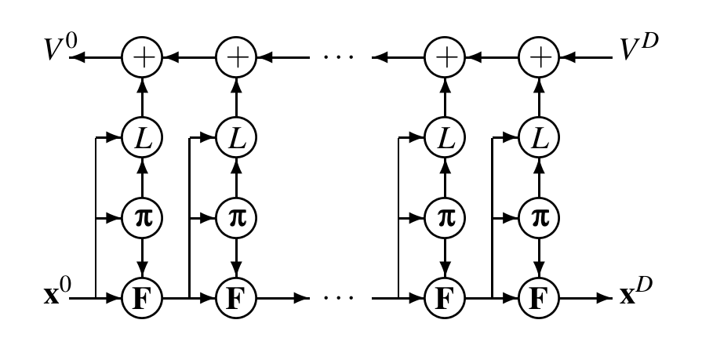

Trajectory Optimization
Control vs. Planning
Control and planning are the two ends of a continuous spectrum. Control is more in a real-time and close-loop fashion while planning is more in an offline and open-loop fashion. There is no clear boundary between control and planning, for example, we can apply a control law and simulate forwards in time to make a open-loop long-term plan or we can apply a open-loop plan in an iterative fashion online to get a close-loop control, such as Model Predictive Control (MPC).
With the development of computer speed, open-loop planning methods, specifically trajectory optimization methods, become popular in real-time control and attract a lot of attention.
Optimal control problem
Continuous-time optimal control problem
Functional forms:
Lagrange Formulation
\begin{equation} \label{eq:b1} J(u(\cdot),t_f) = \int_{t_0}^{t_f}L(\mathbf{x},\mathbf{u},t)dt \end{equation}Bolza Formulation
\begin{equation} \label{eq:b2} J(u(\cdot),t_f) = \phi(\mathbf{x}(t_f), t_f) + \int_{t_0}^{t_f} L(\mathbf{x},\mathbf{u},t) dt \end{equation}s.t.
\begin{equation} \label{eq:b3} \dot{\mathbf{x}} = f(\mathbf{x},\mathbf{u},t), \end{equation}and the boundary conditions
\begin{equation} \label{eq:10} \mathbf{x}(t_0)=\mathbf{x}_0,\quad \psi(\mathbf{x}_f,t_f) = 0 \end{equation}where \(\mathbf{x}(t)\in \mathbb{R}^n\) is the state, \(\mathbf{u}(t)\in \mathbb{R}^m\) is the control, \(t\) is the independent variable (generally speaking, time), \(t_0\) is the initial time, and \(t_f\) is the terminal time. The terms \(\phi\) and \(L\) are called the terminal penalty term and Lagrangian, respectively.
Mayer Formulation In the Mayer formulation, the state vector is extended by: \(x_{n+1}(t)\).
\begin{equation} \label{eq:m1} x_{n+1}(t) = \int_{t_0}^tL(\mathbf{x},\mathbf{u},t)dt. \end{equation}Then the objective is to choose \(\mathbf{u}(t)\) to minimize
\begin{equation} \label{eq:m2} J(u(\cdot),t_f) = \phi(\mathbf{x}(t_f),t_f) \end{equation}s.t.
\begin{equation} \label{eq:m3} \dot{\mathbf{x}} = \begin{bmatrix} f(\mathbf{x},\mathbf{u},t) \\ l(\mathbf{x},\mathbf{u},t) \end{bmatrix} \end{equation}and the boundary conditions
\begin{equation} \mathbf{x}(t_0) = \begin{bmatrix} \mathbf{x}_0 \\ 0 \end{bmatrix} \end{equation}\[ \quad \psi(\mathbf{x}_f,t_f) = 0 \]
Mayer formulation and Bolza formulation are equivalent, but Mayer form yield a simpler expression.
Lagrange, Bolza, and Mayer forms are equivalent. In particular, there are constraints on the state of the form
\begin{equation} \label{eq:state-constraint} S(\mathbf{x}(t)) \le 0 \end{equation}and on the control variable
\begin{equation} \label{eq:control-constraint} C(\mathbf{x}(t),\mathbf{u}(t)) \le 0 \end{equation}The optimal control can be derived using Pontryagin's maximum principle (a necessary condition), or by solving the Hamilton-Jacobi-Bellman equation (a necessary and sufficient condition).
Discrete-time optimal control problem
The discrete-time optimal control problem: \[ J_k(x_k) = \min_{u_k \in \mathcal{U}} \{ \phi(x_N) + \sum_{k=0}^{N-1} L_k(x_k,u_k) \} \] s.t. \[ x_{k+1} = F(x_k, u_k, k) \]
CHOMP (Co-variant Hamiltonian Optimization for Motion Planning)
Remarks
- Suited for gradient-cheap application, where gradient can be computed inexpensively
- Trajectory optimization is invariant to parameterization
- trajectory: a mapping from time t to configuration q
- objective function: a function of trajectory (functional)
- Compared with sampling-based method, optimal control, and trajectory optimization (DDP and iLQR)
The meaning of the name: Co-variant gradient and Hamiltonian Monte Carlo
https://personalrobotics.ri.cmu.edu/files/courses/papers/CHOMP12-ijrr.pdf
Problem formulation
\[ \xi(t)^* = \arg \min_{\xi} U(\xi(t)) \] where \(U (\xi(t)) = F_{smooth}(\xi(t)) + \lambda F_{obs}(\xi(t))\), and
The smoothness objective: \[\ F_{smooth}(\xi(t)) = \frac{1}{2} \int_{0}^{1} ||\frac{d}{dt} \xi(t) ||^2 dt \]
The obstacle objective: \[ F_{obs}(\xi(t)) = \int_{0}^{1} \int_{B} c(x(\xi(t), u)) || \frac{d}{dt} x(\xi(t), u)|| du dt \]
Functional gradient
- The functional gradient \(\nabla U\) is the perturbation \(\phi\) that maximizes \(U[\xi + \epsilon \phi]\) as \(\epsilon \to 0\). Choosing a traditional Euclidean norm \(||\xi||^2 = \int \xi(t)^2 dt\), for any differential objective of form \(F(\xi) = \int L(t, \xi, \xi') dt\), the Euclidean functional gradient: \[ \nabla F(\xi) = \frac{\partial L}{\partial \xi} - \frac{d}{dt} \frac{\partial L}{\partial \dot{\xi}} \]
- Euler-Lagrange equation \[ \frac{\partial L}{\partial q} - \frac{d}{dt} \frac{\partial L}{\partial \dot{q}} = 0 \] Euler-Lagrange equation is the stationary condition for: \[ \min_{q(t)} S(q) = \int_{a}^{b} L(t, q, \dot{q}) dt \]
Functional gradient
- The functional gradient of the smoothness objective:
\[ \nabla F_{smooth} = - \ddot{\xi} \]
- The functional gradient of the obstacle objective
\[ \nabla F_{obs} = \int_{B} J^{\top} ||x'|| \big( (I - \hat{x}'\hat{x}^{\top})\nabla{c} -ck\big) du \] where \(k = \frac{(I - \hat{x}'\hat{x}'^{\top}) x''}{||x'||^2}\) is the curvature vector along the workspace trajectory.
The matrix \((I - \hat{x}'\hat{x}'^{\top})\) is a projection matrix that projects workspace gradients orthogonally to the trajectory’s direction of motion.
Functionals and Co-variant Gradients for Trajectory Optimization
- To removing the dependence on the parametrization (finite difference), defining a norm on trajectory perturbations to depend solely on the dynamical quantities of the trajectory: \[ ||\xi||_A := \int \sum_{n=1}^{k} \alpha_n (D^n \xi(t))^2 dt \] where \(D\) is differential operator, \(A = D^{\top} D\).
Invariant norm \(||\xi(t)||_{A} := <\xi, A\xi> = \int (D\xi(t))^2 dt\)
- Functional gradients based on the invariant norm: \[ \bar{\nabla}_{A} U(\xi) := A^{-1} \bar{\nabla} U(\xi) \]
Waypoint Trajectory Parameterization
refer to the paper
Update rule:
\[ \xi_{i+1} = \arg \min_{\xi} U(\xi_i) + (\xi - \xi_i)^{\top} \nabla U(\xi_i) + \frac{\eta}{2} || \xi - \xi_i||_M \]
This update rule is covariant in the sense that the change to the trajectory that results from the update is a function only of the trajectory itself, and not the particular representation used (e.g. waypoint based), at least in the limit of small step size and fine discretization.
The overall CHOMP objective function is strongly convex – that is, it can be lower-bounded over the entire region by a quadratic with curvature A \[ \xi_{i+1} = \xi_{i} - \eta A^{-1} \nabla U(\xi_{i}) \]
Hamiltonian Monte Carlo
refer: http://arogozhnikov.github.io/2016/12/19/markov_chain_monte_carlo.html
- Intuition \[ p(\xi, \alpha) \propto exp(-\alpha U(\xi)) \]
define a Hamilton function as \[ H(\xi, \gamma) := U(\xi) + K(\gamma) \] where \(K(\gamma) = \frac{1}{2} \gamma'\gamma\).
\[ p(\xi, \gamma) \propto exp(-H(\xi, \gamma)) \]
The system dynamics (Hamilton equation): \[ \frac{d\xi}{dt} = \gamma \] \[ \frac{\gamma}{dt} = -\nabla U(\xi) \]
The full numerically robust Hamiltonian Monte Carlo. refer to the paper
Relationship to DDP
For the sake of simplicity, let's consider a simple case, where: \[ x = q \]
\[ \dot{x} = u \] \[ L(x,u,t) = c(x) ||u|| + \frac{1}{2} u^{\top} u \] \[ H = c(x) ||u|| + \frac{1}{2} u^{\top} u + \lambda^{\top} u \] \[ \lambda = -H_x = - c_x(x) ||u|| \] Therefore, \[ H = c(x) ||u|| + \frac{1}{2} u^{\top} u - ||u|| c_x(x) u \] and \[ H_u = c(x) ||u||_u + u - ||u||_u c_x(x) u - ||u||c_x(x) \]
Continuous DDP (Differential Dynamic Programming)
Calculus of Variation
In optimal control, we are trying to solve: \[ u = \arg \min_{u} J = \psi(x(t_f)) + \int_{t_0}^{t_f} L(x(t), u(t), t) dt \] s.t. \[ \dot{x}(t) = f(x(t), u(t), t) \] \[ x(t_0) = x_0 \]
The total cost \(J\) is a sum of the terminal cost and an integral along the way. The total cost \(J\) is also called performance index.
Using Lagrange method to augment the cost: \[ \bar{J} = L + \lambda^{\top} (f-\dot{x}) \]
Assuming \(J\) is chosen to be continuous in \(x\), \(u\), and \(t\), we write the variation as 1: \[ \delta \bar{J} = \psi_x \delta x(t_f) + \int_{t_0}^{t_f} [ L_x \delta x + L_u \delta u + \lambda^{\top} f_x \delta x + \lambda^{\top} f_u \delta u - \lambda^{\top} \delta \dot(x) ] dt \] where subscripts denote partial derivatives.
The last term: \[ -\int_{t_0}^{t_f} \lambda^{\top} \delta \dot{x} dt = -\lambda^{\top} \delta x |_{t_0}^{t_f} + \int_{t_0}^{t_f} \dot \lambda \delta x dt \] and thus
\begin{align} \label{eq:continous-variation} \boxed{ \delta \bar{J} = [\psi_x(x(t_f)) - \lambda(t_f)^{\top}] \delta x(t_f) + \lambda(t_0)^{\top} \delta x(t_0) + \int_{t_0}^{t_f} (H_x + \dot \lambda^{\top}) \delta x dt + \int_{t_0}^{t_f} H_u \delta u dt } \end{align}where \(H = L + \lambda^{\top} f\) and is called Hamiltonian 2.
To extreme Eq. \ref{eq:continous-variation}, there are three components of variation that must independently be zero since we can vary any of \(\delta x\), \(\delta u\), or \(x(t_f)\):
\begin{equation*} L_x + \lambda^{\top} f_x + \dot{\lambda}^{\top} = 0 \end{equation*} \begin{equation*} L_u + \lambda^{\top} f_u = 0 \end{equation*} \begin{equation*} \psi_x(x(t_f)) - \lambda^{\top}(t_f) = 0 \end{equation*}The evolution of \(\lambda\) is given in reverse time, from the final state to the initial. This is the primary difficulty of solving optimal control problems.
Finally, we have the following equations that extreme the our objective function:
\begin{eqnarray} \label{eq:state-de} \dot{x} &=& f(x(t), u(t), t) \\ \label{eq:co-state-de} \dot{\lambda} &=& -L_x^{\top} - f_x^{\top}\lambda \\ L_u + \lambda^{\top} f_u &=& 0 \end{eqnarray}s.t. \[ x(t_0) = x_0 \] \[ \lambda^{\top}(t_f) = \psi_x(x(t_f)) \]
Note:
- \(\delta x(t_0) = 0\) if the initial state is fixed.
- The function \(L + \lambda^{\top} f\) is called Hamiltonian 3. It is counterpart in discrete time is the Bellmen equation.
- If \(H\) is not differentiable w.r.t. \(u\), then \(u\) can still be derived using the Pontryagin Maximum Principle: \[ u = \arg \min_{u} H(x, u, t, \lambda) \]
- The Lagrange multiplier is often called co-state.
- If we replace \(u\) in Eqs. \ref{eq:state-de} and \ref{eq:co-state-de} with the solution of the optimal control, then Eqs. \ref{eq:state-de} and \ref{eq:co-state-de} become equations only of \(x\) and \(\lambda\), which are often called Hamiltonian Differential Equations.
- Denote \(V\) as the value function, then \(V_x^{\top}\) is a solution of \(\lambda\).
Gradient method
Gradient method is outlined as follows:
- For a given \(x_0\), pick a control history \(u(t)\).
- Solve ODE forwards in time to get state history:
Propagate \(\dot{x} = f(x(t), u(t), t)\) forward in time to create a state history - Solve ODE backwards in time to get co-state history:
Evaluate \(\psi_x(x(t_f))\), and propagate the co-state backwards in time from \(t_f\) to \(t_0\) - At each time step, minimize the Hamiltonian by:
- choosing \(\delta u = - \epsilon H_u\), where \(\epsilon \in (0, 1]\)
- update \(u = u + \delta u\)
- If \(J^{i+1} < J^{i}\), go back to step 2 with \(i = i + 1\). Otherwise, reduce the step size \(\epsilon\) and repeat 4 (backtracking line search).
- Exit if the early exit conditions are satisfied.
Newton-Raphson method (successive sweep method)
Newton-Raphson method uses second order variation to minimize the Hamiltonian, \(H = L + \lambda^{\top} f\).
The Newton step of \(\delta u\) is given by:
\begin{eqnarray} \label{eq:newton-control-update} \delta u &=& \arg \min_{\delta u} \delta H \\ &=& -H_{uu}^{-1}H_u - H_{uu}^{-1} H_{ux}\delta x \end{eqnarray}Compared with gradient method, there is an additional term of \(-H_{uu}^{-1}H_{ux} \delta x\), which means \(\lambda\) is changed because \(\delta u\) depends on \(\delta x\).
\begin{equation} \label{eq:lambda-ode} \dot{\lambda}^{\top} = -H_x - H_u u_x = -H_x + H_u H_{uu}^{-1} H_{ux} \end{equation} \begin{equation} \label{eq:lambda_x-ode} \dot{\lambda_x}^{\top} = -H_{xx} - H_{ux} u_x = -H_{xx} + H_{ux} H_{uu}^{-1} H_{ux} \end{equation} \begin{eqnarray} H_u &=& L_u + \lambda f_u \\ H_{ux} &=& L_{ux} + \lambda_x f_u + \lambda f_{ux} \\ H_{uu} &=& L_{uu} + \lambda f_{ux} \end{eqnarray}Newton's method is outlined as follows:
- For a given \(x_0\), pick a control history \(u(t)\).
- For iteration \(i\), solve ODE forwards in time to get state history \(x(t)^{i}\):
Propagate \(\dot{x} = f(x(t), u(t), t)\) forwards in time to create a state history - Solve ODE backwards in time to get co-state history \(\lambda(t)^{i}\):
Evaluate \(\psi_x(x(t_f))\) and \(\psi_{xx}(x(t_f))\), and propagate \(\lambda(t)\) and \(\lambda_x(t)\) backwards in time from \(t_f\) to \(t_0\) - At each time step, minimize the Hamiltonian by:
\(u^{i+1}=u^{i}-\epsilon H_{uu}^{-1}H_{u} - H_{uu}^{-1}H_{ux}\delta x\) - If \(J^{i+1} < J^{i}\), go back to step 2 with \(i = i + 1\). Otherwise, reduce the step size \(\epsilon\) and repeat step 4 (backtracking line search).
Note:
- If the system dynamics is linear and the cost function is quadratic, one step convergence can be achieved with \(\epsilon=1\)
Control parameters
Control parameters are constant variables in the optimal control problem structure, for example: \(L(x,u,\alpha, t)\). According to the maximum principle:
Thus, we have: \[ \delta u = -H_{uu}^{-1} H_u - H_{uu}^{-1} H_{ux} \delta x - H_{uu}^{-1}H_{u\alpha} \delta \alpha \] when it converge, \(H_u = 0\) and: \[ u^{*}_x = -H_{uu}^{-1} H_{ux} \] and \[ u^{*}_{\alpha} = -H_{uu}^{-1} H_{u\alpha} \]
As you can see, \(\alpha\) has similar coefficient as the sate variable. We can actually take \(\alpha\) as a state variable and then solve it in the same way: define \(v = [x^{\top}, \alpha^{\top}]^{\top}\), the dynamics:
Discrete DDP
Discrete time optimal control is to find a control sequence that: \[ u(0, \ldots, N-1) = \arg \min_{u} \phi(x_N) + \sum_{i=k}^{N-1} a\big ( L(x_i, u_i, i) + V(x_{i+1}, i+1) \big ) \] s.t. \[ x_{k+1} = F(x_k, u_k, k) \] \[ x(0) = x_0 \]
Define an optimal cost-to-go function (value function) as: \[ V(x_k, k) = \min_{u} \sum_{i=k}^{N-1} \big ( L(x_i, u_i, i) + V(x_{i+1}, i+1) \big ) + \phi(x(N)) \]
and a \(Q\) function: \[ Q(x_k, u_k, k) = L(x_k, u_k, k) + V(x_{k+1}, k+1) \]
The optimal control at time \(k\) is given by: \[ u^*(k) = \arg \min_{u(k)} Q(x_k, u_k, k) \]
Second order expansion:
\begin{equation} Q(x_k + \delta x, u_k + \delta u) = \frac{1}{2} \begin{bmatrix} 1 \\ \delta x_k \\ \delta u_k \end{bmatrix}^{\top} \begin{bmatrix} 2 Q & Q_x & Q_u \\ Q_x^{\top} & Q_{xx} & Q_{xu} \\ Q_u^{\top} & Q_{ux} & Q_{uu} \end{bmatrix} \begin{bmatrix} 1 \\ \delta x_k \\ \delta u_k \end{bmatrix} \end{equation}The Newton step of \(u\) at time \(k\) is given by: \[ \delta u = -Q_{uu}^{-1}Q_{u}^{\top} - Q_{uu}^{-1}Q_{ux} \delta x \]
For \(Q\) approximation:
\begin{eqnarray*} Q_x(k) &=& L_x(k) + V_x(k+1) F_{x}(k) \\ Q_u(k) &=& L_u(k) + V_x(k+1) F_{u}(k) \\ Q_{xx}(k) &=& L_{xx}(k) + F_x(k)^{\top} V_{xx}(k+1) F_x(k) + V_x(k+1) F_{xx}(k) \\ Q_{xu}(k) &=& L_{xu}(k) + F_u(k)^{\top} V_{xx}(k+1) F_x(k) + V_x(k+1) F_{xu}(k) \\ Q_{ux}(k) &=& L_{ux}(k) + F_x(k)^{\top} V_{xx}(k+1) F_u(k) + V_x(k+1) F_{ux}(k) \\ Q_{uu}(k) &=& L_{uu}(k) + F_u(k)^{\top} V_{xx}(k+1) F_u(k) + V_x(k+1) F_{uu}(k) \end{eqnarray*}The value function (optimal cost to go) is the Q function when the control is optimal. Therefore, the value function approximation is given by:
\begin{eqnarray*} V(k) &=& Q(k) - Q_uQ_{uu}^{-1}Q_u^{\top} \\ V_x(k) &=& Q_x(k) - Q_u(k) Q_{uu}^{-1}(k) Q_{ux}(k) \\ V_{xx}(k) &=& Q_{xx}(k) - Q_{xu}(k) Q_{uu}^{-1}(k) Q_{ux}(k) \end{eqnarray*}The terminal conditions are: \[ V_x(N) = \phi_x(N) \] \[ V_{xx}(N) = \phi_{xx}(N) \]
iLQR
The iLQR is a special form of DDP that it uses first order approximation of the system dynamics.
Problem definition and notations
Problem: \[ u(0, \ldots , N-1) = \arg \min_{u} \sum_{k=0}^{N-1} L(x_k, u_k, k) + \phi(x_N) \] s.t.
\begin{equation} \label{eq:ilqr-dynamics} x_{k+1} = F(x_k, u_k, k) \end{equation}The first order approximation of the dynamics is given by: \[ x(k+1) = F_x \delta x(k) + F_u \delta u(k) + F(x_k, u_k, k) \]
Define a vector as \(v := [1 \ \delta x^{\top} \ \delta u^{\top}]^{\top}\).
The second order expansion of the cost function:
\begin{equation} L(x, u, k) := v^{\top} \begin{bmatrix} L & L_x^{\top} & L_u^{\top} \\ L_x & L_{xx} & L_{xu} \\ L_u & L_{ux} & L_{uu} \end{bmatrix} v \end{equation}Define \(Z(x(k), u(k), k) := L(x(k), u(k), k) + V(x(k+1), k+1)\), which is often called Q function. The second order approximation of the Q function is given by:
\begin{equation} Z(x_k,u_k, k) = \frac{1}{2} \begin{bmatrix} 1 \\ \delta x \\ \delta u \end{bmatrix}^{\top} \left[ \begin{array}{ccc} 2Z & Z_x^{\top} & Z_u^{\top} \\ Z_x & Z_{xx} & Z_{xu} \\ Z_u & Z_{ux} & Z_{uu} \end{array} \right] \begin{bmatrix} 1 \\ \delta x \\ \delta u \end{bmatrix} \end{equation}For the shake of simplicity, let us denote the hessian matrix as:
\begin{equation} \left[ \begin{array}{cc|c} 2Z & Z_x^{\top} & Z_u^{\top} \\ Z_x & Z_{xx} & Z_{xu} \\ \hline Z_u & Z_{ux} & Z_{uu} \end{array} \right] = \left[ \begin{array}{c|c} Z_{11} & Z_{12} \\ \hline Z_{21} & Z_{22} \end{array} \right] \end{equation}where \(Z_{11} \in R^{(1 + N) \times (1 + N)}\), \(Z_{12} \in R^{(1+N) \times M}\), \(Z_{21} \in R^{M \times (1 + N)}\) and \(Z_{22} \in R^{M \times M}\)
Then the optimal control taken a Newton step is given by: \[ u^*(k) = u(k) - \alpha k - K \delta x(k) \] where \[ \left[k | K \right] = - Z_{22}^{-1}(k)Z_{21}(k) \in R^{M \times (1 + N)} \]
The value function is the Q function when the control is optimal. Its second order approximation is thus given by4:
\begin{equation} \label{eq:ilqr-value-update} V(x, k) = \begin{bmatrix} 1 \\ \delta x \end{bmatrix}^{\top} (Z_{11}(k) - Z_{12}(k)Z_{22}^{-1}(k) Z_{21}(k)) \begin{bmatrix} 1 \\ \delta x \end{bmatrix} \end{equation}To make it symmetric, \[ V = 0.5 (V^{\top} + V) \]
For convenience, let's define a dynamics Jacobian as:
\begin{equation} \label{eq:ilqr-dynamics-jacobian} D:= \begin{bmatrix} 1 & 0 & 0 \\ 0 & F_x^{\top} & F_u^{\top} \end{bmatrix} \end{equation}The the chain rule for Q function update is given by:
\begin{equation} \label{eq:ilqr-q-update} Z(k) = L + D^{\top} V(k+1) D \end{equation}where \[ V(N) = \phi(x_N, N) \] \[ V_x(N) = \phi_x(x_N, N) \] \[ V_{xx}(N) = \phi_{xx}(x_N, N) \]
The algorithm
The iLQR is outlined as follows:
- For a given \(x_0\), pick a control history \(u(0, \ldots, N-1)\)
- Simulate forwards in time to get the state history, \(x(0, \ldots, N)\), according to the system dynamics of Eq. \ref{eq:ilqr-dynamics}
- Simulate backwards in time to update the Q history, \(Z(N, \ldots, 0)\), according to Eqs. \ref{eq:ilqr-value-update}, \ref{eq:ilqr-dynamics-jacobian} and \ref{eq:ilqr-q-update}.
- if the initial state is open, \(\delta x(0) = V_{xx}^{-1}(0) V_x(0)\). Otherwise, \(\delta x(0) = 0\). recorder the current cost as \(J^{0}\) and its maximum possible decrease as: \[ \Delta J = V(0) - J^0 \]
- early stop:
- if \(\Delta J > 0\), return ERROR.
- else if \(\Delta J > - abs\_tols\) or \(|\Delta J / J^0| < rel\_tol\), return SUCCESS
- if exceed iteration number, return WARNING
- Backtracking line search5:
- Start with \(\alpha = 1.0\) and iteration number \(i\) as 1
- Simulate forwards in time to get the state and control history. \[ x(0) \gets x(0) - \alpha \delta x(0) \] \[ u(k) \gets u(k) - \alpha k - K \delta x(k) \]
- Evaluate the resultant trajectory and denote its cost as \(J^i\).
- if \(J^{i} < J^{0} - \alpha * c * |\Delta J|\), where \(c \in (0, 0.5)\) is the Armijo factor (typically \(c=0.25)\), then return SUCCESS. Otherwise, \(\alpha \gets \tau \alpha\), where \(\tau \in (0,1)\) is the backtracking parameter, and repeat b). If \(i > i_{max}\) or \(\alpha\) becomes zero, return ERROR.
Continuous LQR (Linear Quadratic Regulator)
Finite horizon LQR
For finite horizon LQR, we are solving: \[ u(t) = \arg \min_{u} x_f^{\top} Q(t_f) x_f + \int_{t_0}^{t_f} \frac{1}{2} x^{\top}(t) Q(t) x(t) + \frac{1}{2} u^{\top}(t) R(t) u(t) \] s.t. \[ \dot{x}(t) = A(t) x(t) + B(t) u(t) \]
The Hamiltonian: \[ H = \frac{1}{2} x^{\top} Q x + \frac{1}{2} u^{\top} R u + \lambda^{\top} (A x + B u) \] The optimal control is given by: \[ H_u = 0 \] then we have: \[ u^*= -R^{-1} B^{\top} \lambda \]
For the co-state: \[\dot{\lambda} = -H_x^{\top} = -Q x - A^{\top} \lambda \]
Using the optimal control, the system dynamics with co-state can be written as:
\begin{equation} \label{eq:Hamiltonian-de} \frac{d}{dt} \begin{bmatrix} x \\ \lambda \end{bmatrix} = \begin{bmatrix} A(t) & - B(t)R^{-1}(t)B^{\top}(t) \\ -Q(t) & -A^{\top} (t) \end{bmatrix} \begin{bmatrix} x \\ \lambda \end{bmatrix} \end{equation}Note:
- Eq. \ref{eq:Hamiltonian-de} is called Hamiltonian DE.
- The \(2n \times 2n\) matrix is called Hamiltonian for the problem.
- with conditions: \(x(0) = x_0\) and \(\lambda(t_f) = Q_f x(t_f)\), the problem is a Two-Point Boundary Value problem.
Since \(\lambda(t_f) = Q_f x(t_f)\), let's try a connection \(\lambda = P(t) x(t)\), we have:
\begin{equation} \label{eq:riccati-de} -\dot{P} = P(t)A(t) + A(t)^{\top} P(t) + Q(t) - P(t)B(t)R^{-1}(t)B(t)^{\top} P(t) \end{equation}s.t. \[ P(t_f) = Q_f \]
Note:
- Eq. \ref{eq:riccati-de} is Riccati differential equation.
- It can be derived by Eq. \ref{eq:lambda_x-ode}.
- we can integrate backwards in time to get \(P(t)\) and then get optimal control: \[ u^*= -R^{-1}(t) B^{\top}(t) P(t) x(t) \]
Infinite horizon LQR
For finite horizon LQR, we are solving: \[ \min_{u} \int_{0}^{\infty} \frac{1}{2} x^{\top}(t) Q x(t) + \frac{1}{2} u^{\top}(t) R u(t) \] s.t. \[ \dot{x}(t) = A x(t) + B u(t) \]
\(P\) is found by solving the continuous time algebraic Riccati equation:
\[ 0 = PA + A^{\top} P + Q - PBR^{-1}B^{\top} P \]
The optimal control is given by: \[ u = -R^{-1}B^{\top} P x \]
Discrete LQR
For discrete time LQR, we are interested in the following problem: \[ u(0, \dots, N-1) = \arg \min_{u} \sum_{k=0}^{N-1} \frac{1}{2} x_k^{\top} Q_k x_k + \frac{1}{2} u_k^{\top} R_k u_k + x_N^{\top} P_N x_N \] s.t. \[ x_{k+1} = A_k x_k + B_k u_k \] \[ x_0 = x(0) \]
We can derive discrete time LQR using the results of discrete time DDP, where \(L_x(k) = x^{\top} Q\), \(L_u= u^{\top} R\), \(L_{xx} = Q\), \(Luu = Q\), \(F_x = A\), \(F_u = B\).
Backpropagate as a network
The following diagram best describes the nature of the optimal control problem, which is a Two-point Boundary Value Problem, where the initial state and the final co-state are defined 6.

Note: There is a connection between π and v(k+1), which is not shown in the original paper, because: \[ \pi(x_k) = \arg \min_{u_k} L(x_k, u_k, k) + V(x_{k+1}, k+1) \]
Footnotes:
Here we are assuming the augmented Lagrangian is differentiable. In fact, it is quite often for problems with bounded controls and terminal cost to have nondifferentiable optimal cost-to-go functions.
Recall that we can get Hamiltonian from Lagrangian by calculating the momenta by differentiating the augmented Lagrangian with respect to the 'velocity', \(\dot{x}\), as \(p=\frac{\partial{L}}{\partial{\dot{q}}}\). Then the Hamiltonian is then given by \(H=p\dot{q}-L\). As we can see that the Lagrange multiplier \(\lambda\) in Eq. \ref{eq:continous-variation} is actually the 'momenta', but with an opposite sign. This gives us an interesting insight into the optimal control problem.
This is not a 'real' value function since we haven't found the optimal trajectory yet. However, this is the best one that we can get.
Efficient robust policy optimization, American Control Conference (ACC), 2012, Christopher G. Atkeson, Robotics Institute, Carnegie Mellon University, 5000 Forbes Avenue, Pittsburgh, PA, USA